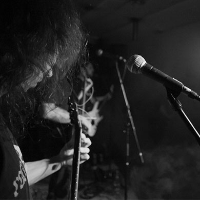
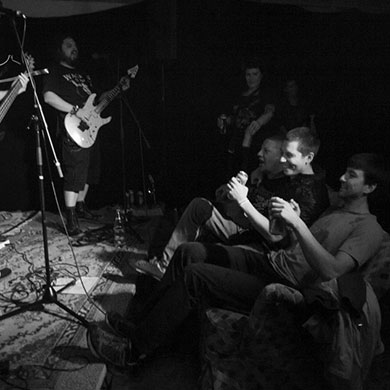
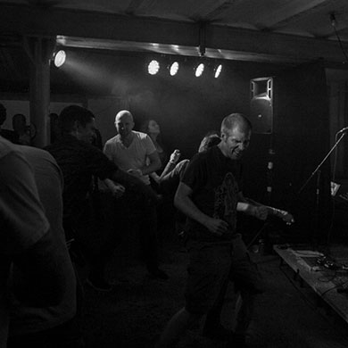

TomTurbo
Tom Turbo and the Breadfuck Ensemble (abbreviated: TTATBFE) was formed in early 2005 after earlier bands like Eigenanbau didn't survive long enough to produce a single record. They started to play shows almost immediatly and were soon enough known all around Basel, including a legendery gig in Sissach which ended in a big brawl. But this and other drawbacks didn't stop them from recording and releasing a demo in early 2006 and hitting the road afterwards. They already were playing in almost every important location in Switzerland and even opened up a show for Deadline in June of 2007.
  